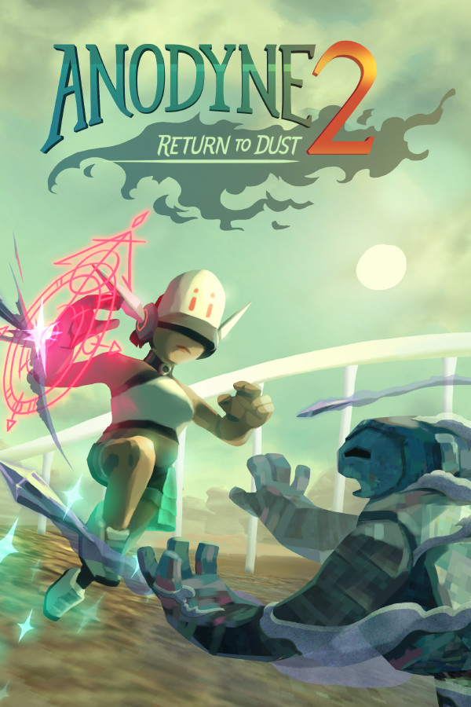

Anodyne 2: Return to Dust
Anodyne 2: Return to Dust
Details
|  | |
| Playtime | Not Played |
| Last Activity | Never |
| Added | 6/3/2022 4:21:14 |
| Modified | 6/14/2022 12:50:54 |
| Completion Status | Not Played |
| Library | Epic |
| Source | Epic |
| Platform | Epic Games PC (Windows) |
| Release Date | 8/12/2019 |
| Community Score | 87 |
| Critic Score | 70 |
| User Score | |
| Genre | Adventure Indie RPG |
| Developer | Marina Kittaka Melos Han-Tani |
| Publisher | Analgesic Productions |
| Feature | Achievements Cloud Saves Partial Controller Support Single Player |
| Links | Community Hub Discussions Guides News Store Page PCGamingWiki Achievements |
| Tag | |
Description
Rescue A Mysterious Island From A Mind-Warping Plague
Nano Dust infects the islanders of New Theland, distorting their emotions and desires. You play as Nova, a Nano Cleaner who must explore the island, seeking out the sick and shrinking inside their bodies to suction up the Dust.
Anodyne 2: Return to Dust combines the thrilling scale and cinematic storytelling of 3D games with the tight design and easy-to-pick-up satisfaction of 2D Zelda-like adventures. With art that re-imagines the PS1 and N64 era, explore 3D cities, valleys, and wastelands then shrink into the varied 2D mindscapes of characters, from snowy, aurora-lit valleys to perilous volcanic construction sites!

Features
- Jump, drive, and walk across gorgeous and haunting locales in 3D, speaking with strange and memorable characters.
- Vacuum up Nano Dust in 2D, suck up and fight enemies, all while overcoming mind-bending challenges related to the characters’ inner lives.
- Experience the thrilling and emotional story of Nova. Her destiny is clear: she is the Nano Cleaner who will save New Theland. But strange characters & painful experiences will put her loyalty to the test...
- Choose where you want to go! The sweeping vistas of New Theland quickly open up to exploration.
- Access the outer reaches of New Theland by using magical Cards you will find on your journey.
- Transform into a car at will and quickly drive around the world. No need to call a horse!
- Fire your Spark to shrink into the bodies of the infected, explore the 2D Zelda-like dungeons within, and heal them.
- Enjoy the lush, dreamy and breathtaking 3D and 2D landscapes painted and pixeled by artist Marina Kittaka.
- Listen to over 50 new songs influenced by countless genres by Melos Han-Tani, perfectly fitting the varied landscapes of Anodyne 2.
- Play the newest game from the dream duo behind Anodyne 1, All Our Asias, and Even the Ocean.
ESRB Rating E 10+. Content Warnings below.
A Lush, Surreal Lo-fi 3D and 2D World
Anodyne 2: Return to Dust uses modern technology to reimagine old 3D art of the PS1, PS2, and N64 era, as well as the 2D art of the GBA and SNES. Each area captures a strong visual mood, with new characters to meet and sights to see.
If you like exploring beautiful places and experiencing dramatic stories - Anodyne 2's world is ready for you to explore!
Do I need to play Anodyne 1?
Nope! Similar to the Final Fantasy franchise, there's no need to play the original Anodyne to understand the story in Anodyne 2: Return to Dust, but longtime fans will find connections between the two! If you'd like to check out both, you may want to purchase the Franchise Bundle!
http://store.steampowered.com/app/234900/Anodyne/
Russian Localization: Artyom Solomatin / Артём Соломатин (artsolomatin@gmail.com)
Simplified Chinese Localization: Ada Wu / 一只小雨 ada.wuyu@gmail.com
Japanese Localization: Yuki Hiraguchi, On Takahashi (takahashi@warlocs.com)
French Localization: Kévin Malchere (kmalchere@warlocs.com)
Brazilian Portuguese: deviantart.com/anemptysoul
German Localization: Marcel Weyers, Steven Korkowsky (Tolma4 Team)
--
Content Warnings (No Spoilers)
Mild Horror, dead bodies, mild body horror, rare occasional language
Content Warnings (Spoilers)
Body horror: In the 'good ending' of the game, the character C Visionary opens its body up into a spiky dragon mouth. It's not bloody but it might be upsetting to some.
Mild Horror, Dead Bodies: In a late-game area in the desert, talking to an upside-down creature takes you to an area where the art style is much different. If you play here long enough there's a short 'chase' sequence that's akin to horror games, also the atmosphere is a little spooky. There's also something looking like a dead body later with a gargoyle beast implied to be eating it.
This entire sequence is skippable if you don't want 100%. If you do want 100%, you have to play everything in the sequence up to the chase (which can be skipped without seeing the dead body)